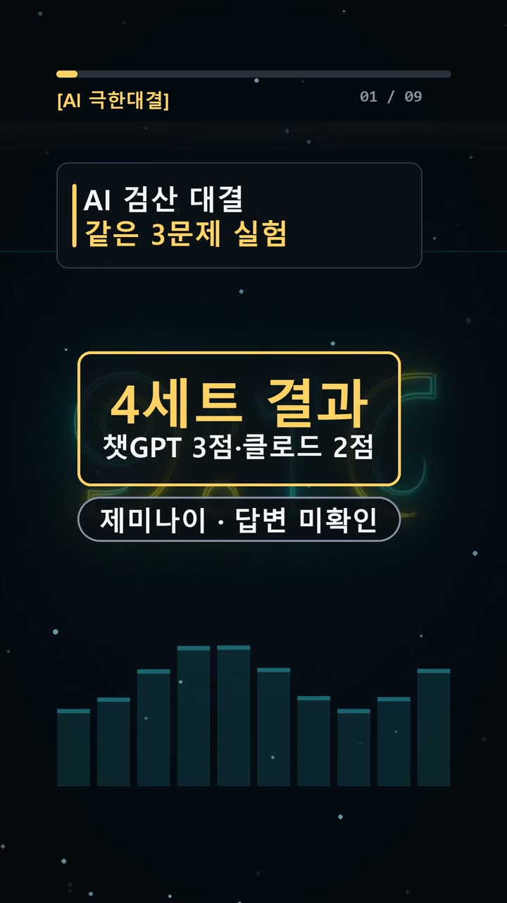
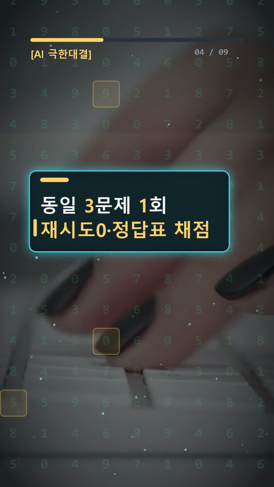
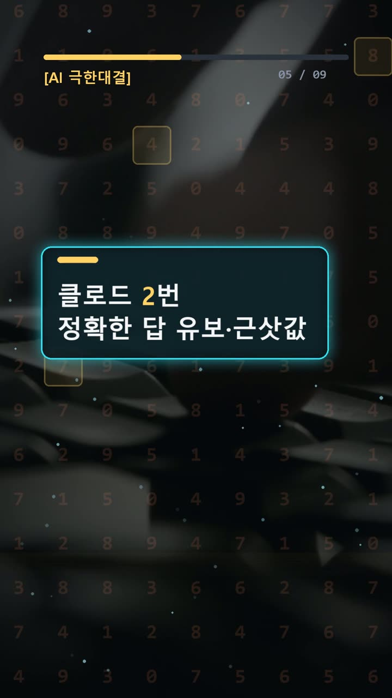
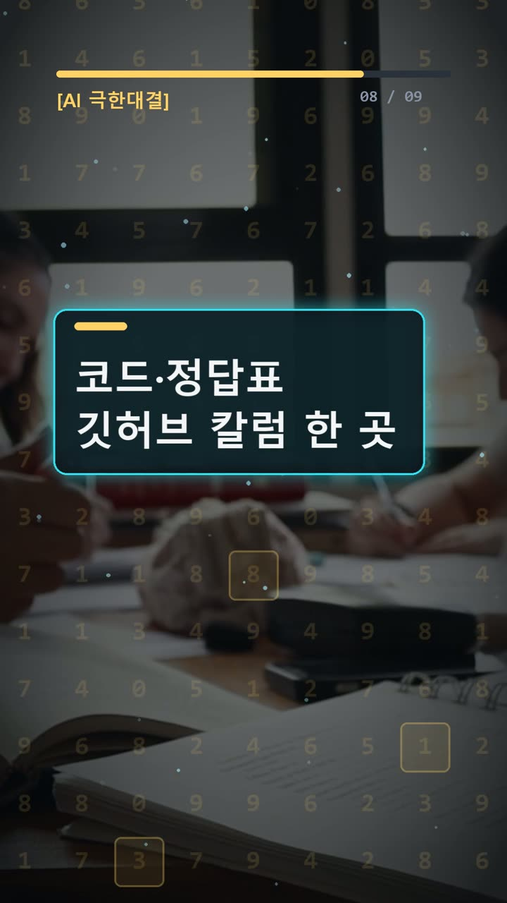

이 포스팅은 쿠팡 파트너스 및 토스쇼핑 쉐어링크 활동의 일환으로, 이에 따른 일정액의 수수료를 제공받습니다.
ai 비교 분석 3점·2점보다 먼저 볼 실험 기록
서론
AI가 내놓은 숫자를 보고서에 옮기거나, 설명한 코드 결과를 그대로 믿어도 될까. 직장인과 개발자에게 필요한 것은 그럴듯한 답보다 확인할 수 있는 답이다. 특히 비교표를 만들 때는 질문과 답안이 같은 실험에 속하는지부터 살펴야 한다.
2026년 10월 25일 기록의 결론은 챗GPT 3점, 클로드 2점이다. 제미나이는 Argon 한도로 실행하지 않아 미채점이다. 실험 조건은 같은 질문 1회, 재시도 0회로 적혀 있다.
다만 중요한 문제가 있다. 제공된 질문·정답표와 실제 답안이 서로 맞지 않는다. 따라서 이 점수를 제공된 세 문제의 검증 결과로 곧바로 받아들일 수는 없다. 이번 글에서는 기록된 채점과 직접 대조할 수 있는 내용을 나눠 살펴본다.

실험 설계
질문 목록에는 세 가지 문제가 담겨 있다.
- 점수에 4를 더하고 1을 빼다가 처음 30 이상이 되는 차례 찾기.
- 1번부터 100번까지 짝수와 숫자 9가 들어간 번호를 탈락시키기.
- 파이썬에서 반복해서 만든 중첩 리스트의 출력 예측하기.
정답표는 차례대로 19, 36, [[1], [1], [1]]이다. 세 문제는 각각 멈추는 시점, 조건의 중복, 리스트가 같은 대상을 가리키는지를 확인하는 구성이다. 출제자가 이 문제들을 고른 구체적인 이유는 기록에 없다.
정답을 먼저 살펴야 하는 이유는 분명하다. 모델의 말투나 설명 길이가 채점 기준을 바꾸지 않게 하기 위해서다. 다만 이 자료만으로 정답표를 만든 시점이나 검산 절차까지 확인할 수는 없다.
기록을 읽는 순서는 질문과 정답표 확인, 모델의 실제 답 확인, 채점표 대조다. 이 순서로 살피면 답이 맞는지 판단하기 전에 자료가 같은 문제를 가리키는지 확인할 수 있다.
결과
모델 표기는 GPT-6.1 Sol High, Opus 5.5 중간, Gemini 4 Argon이다. 채점표에는 다음과 같이 적혀 있다.
| 모델 | 1번 | 2번 | 3번 | 기록상 결과 | |---|---|---|---|---| | 챗GPT | PASS | PASS | PASS | 3/3 | | 클로드 | PASS | FAIL | PASS | 2/3 | | 제미나이 | UNCLEAR | UNCLEAR | UNCLEAR | 미실행·미채점 |
제미나이의 빈 답안을 오답이나 0점으로 세면 안 된다. 답할 기회 자체가 없었기 때문이다.

그런데 실제 답안에서 챗GPT와 클로드가 공통으로 제출한 1번 숫자는 다음과 같다.
636363636363636363636363636724
질문 목록의 1번 정답인 19와 다르다. 챗GPT의 실제 2번 답도 정답표의 36이 아니라 아래 숫자다.
6557081660801813397005326578521
클로드는 2번에서 정확한 정수를 제출하지 않았다. 코드 실행 없이 97로 나눈 나머지 조건까지 손계산으로 확정할 수 없다고 밝혔다. 대신 약 6.56×10^30이라는 근삿값과 자리별로 경우의 수를 세는 계산 방법을 제시했다.
두 모델의 실제 3번 답안은 동일하다.
0 [2, 3] [8, 2, 3, 4] [[8, 2, 3, 4], [8, 2, 3, 4, 5]] [[9, 8, 7, 6], [8, 2, 3, 4]]
이 출력도 제공된 짧은 리스트 코드의 정답과 일치하지 않는다. 따라서 실제 답안이 다른 문제 묶음의 답인지 확인할 원문이 필요하다. 간단한 질문이 앞선 세트였다고 임의로 연결해서도 안 된다.
기록에는 1~3세트가 세 모델 모두 3/3이었다는 요약도 있다. 하지만 각 세트의 문제와 답안이 모두 제공된 것은 아니므로, 여기서 다시 채점할 수는 없다.
왜 이런 결과가 나왔나
제공된 세 문제의 함정 자체는 쉽게 설명할 수 있다.
첫 문제는 두 차례를 한 묶음으로 보면 점수가 3씩 오른다. 18번째 계산 뒤에는 27점이다. 이어 19번째에 4를 더하면 31점이므로 그때 멈춘다. 20번째까지 계산한 뒤 확인하면 중간에 멈추라는 조건을 놓친다.
두 번째는 탈락 조건을 겹쳐 세지 않는 것이 핵심이다. 짝수를 빼면 홀수 50명이 남는다. 이 중 일의 자리가 9인 번호가 10개다. 십의 자리가 9인 홀수는 5개인데, 99는 이미 셌다. 따라서 탈락하는 홀수는 14명이고, 남는 사람은 36명이다.

세 번째의 a = [[]] * 3은 서로 다른 빈 리스트 세 개를 만드는 코드가 아니다. 바깥 리스트의 세 칸이 같은 안쪽 리스트를 가리킨다. 그 리스트에 1을 추가하면 세 칸 모두 [1]로 보인다.
다만 이 풀이로 실제 답안의 큰 숫자나 긴 출력까지 설명할 수는 없다. 질문과 답안이 연결되지 않기 때문이다. 클로드의 97 조건 설명도 해당 문제 원문 없이 계산 근거 전체를 검증하기는 어렵다.
이번에 확인된 시행착오는 비교 자료의 연결 문제다. 단순히 숫자 하나를 틀린 경우와 정확한 답을 내지 못했다고 밝힌 경우도 구분해야 한다. 기록상 클로드의 FAIL은 후자다.

🧰 오늘의 실험실 생존 세트 — 밤새 실험 돌릴 때 쟁여 두는 것들


결론
실무에서 AI 답을 확인할 때는 다음 순서가 도움이 된다.
- 질문 원문과 답안이 같은 문제에 속하는지 확인한다.
- 정답표와 실제 제출값을 나란히 놓고 비교한다.
- 정확한 숫자가 필요하면 근삿값과 답변 유보를 구분한다.
- 코드는 같은 입력으로 실행하고, 계산은 중간값을 검산한다.
- 미실행은 오답과 별도로 표시한다.
이번 기록의 조건은 1회 시도, 문제 3개이며, 4세트는 제미나이 미실행으로 3자 비교가 불완전하다. 여기에 질문·답안 불일치도 있어 기록상 점수를 독립적으로 검증하거나 모델의 일반적 우열로 넓혀 해석할 수 없다.
다음 비교에서 먼저 채워야 할 것은 순위표가 아니라 질문·정답·답안의 연결이다. 같은 문제를 보고 있다는 사실이 확인돼야 점수에도 의미가 생긴다.
이 글은 제공된 실제 실험 기록을 바탕으로 AI 도구와 함께 정리했다.
혹시 글에서 틀린 부분이나 고쳐야 할 부분이 보이면 유튜브·스레드 댓글로 알려 주시면 정말 감사하겠습니다. 바로 확인해서 고칠게요!
실험 원문과 실제 답
아래 질문을 세 AI에 똑같이 1번씩 보냈어요.
아래 3문제에 번호별로 짧게 답해라. 1. 점수는 0에서 시작합니다. 1번째에는 4를 더하고, 2번째에는 1을 빼고, 이후에도 홀수 번째는 4를 더하고 짝수 번째는 1을 뺍니다. 각 차례의 덧셈 또는 뺄셈이 끝난 뒤 점수가 30 이상이면 그 차례에서 멈추고 다음 차례는 하지 않습니다. 점수가 처음 30 이상이 되는 차례는 몇 번째입니까? 숫자만 답하세요. 2. 1번부터 100번까지 100명입니다. 먼저 짝수 번호를 모두 탈락시킵니다. 남은 사람 중에서 번호에 숫자 9가 한 번이라도 들어가면 탈락시킵니다. 최종으로 남는 사람은 몇 명입니까? 숫자만 답하세요. 3. 다음 파이썬 3 코드를 실행했을 때 화면에 출력되는 값만 답하세요. a = [[]] * 3 a[0].append(1) print(a)
정답(실험 전에 먼저 정함): 19 / 36 / [[1], [1], [1]]
| AI | 실제 답 |
|---|---|
| GPT | 636363636363636363636363636724 6557081660801813397005326578521 0 [2, 3] [8, 2, 3, 4] [[8, 2, 3, 4], [8, 2, 3, 4, 5]] [[9, 8, 7, 6], [8, 2, 3, 4]] |
| Claude | 636363636363636363636363636724 정확한 값을 드리지 못했습니다. 이 대화에서는 코드를 실행할 수 없고, 97 나머지 조건까지 반영한 정확한 개수는 손계산으로 확정할 수 없습니다. 97 조건만 빼고 세면 2^81 × 263058705개(약 6.36×10^32)입니다. 여기서 대략 1/97이 97의 배수이므로 답은 약 6.56×10^30입니다. 정확한 정수는 자리별 나머지 DP로 계산해야 합니다. 0 [2, 3] [8, 2, 3, 4] [[8, 2, 3, 4], [8, 2, 3, 4, 5]] [[9, 8, 7, 6], [8, 2, 3, 4]] |
| Gemini |
🛒 다시 보기: 오늘의 생존 세트
🎙️ AI 음성이 궁금하다면
우리 채널 내레이션은 타입캐스트를 쓰지만, 영어·다국어 AI 음성을 실험해 보고 싶다면 ElevenLabs도 많이 쓰여요.
ElevenLabs 둘러보기 (제휴)🎬 쇼츠로 다시 보기 · 🧵 함께 이야기하기
🧵 스레드 @alligatorxor에서 오늘 실험 이야기 나누기 · ▶ 유튜브 새AI실험노트 다른 쇼츠 보기 · 📒 실험노트 홈